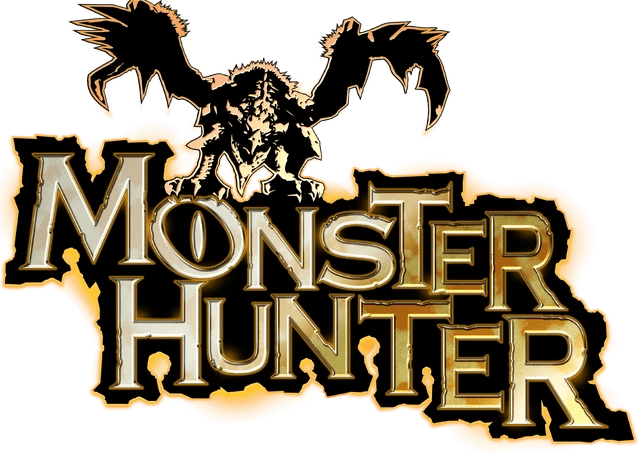

À propos de moi
Passionnée par l'informatique et actuellement en formation chez Simplon, je développe mes compétences dans l'informatique. Curieuse et motivée, je suis toujours à la recherche de nouveaux défis qui me permettent de mettre en pratique mes connaissances tout en apprenant des technologies et des approches innovantes. Mon objectif est d'explorer les métiers de l'informatique pour trouver ma voie professionnelle.
Profil
- Lucie DE HARO LOPEZ
- 4 Mars 2004
- 9 Rue de la Vallée 49130 Les Ponts de Cé
- 07 82 82 59 88
- Lucie.deharolopez@gmail.com
Nom
Date de naissance
Adresse
Téléphone
Expérience professionelle
- Apprentissage horticulture - Ets SAULAIS - Sainte Gemmes sur Loire
Août 2022 - Mars 2023
Formation et diplôme
- Première année CAPA Métiers de l'Agriculture Production Horticole - Lycée Le Fresne - Sainte Gemmes sur Loire
- Première technologique STI2D - Lycée Livet - Nantes
- Seconde Générale - Lycée Jean Bodin - Les Ponts de Cé
- Obtention Diplôme National du Brevet - Collège François Villon - Les Ponts de Cé
Août 2022 - Mars 2023
Sept 2020 - Juin 2021
Sept 2019 - Juin 2020
Juin 2019
Mes loisirs
Jeux vidéo
Les jeux vidéo ont toujours été une source d'évasion et de plaisir pour moi. Ils m'offrent des univers à explorer, des défis à relever, et des histoires captivantes à vivre. De mon premier jeu sur Game Boy Color à des titres plus récents, ma passion pour les jeux n'a cessé de grandir. J'aime autant les aventures en solo que les moments de compétition multijoueur.
Mangas
Les mangas sont une autre grande passion qui me permet de m'évader à travers des histoires visuelles fascinantes. Que ce soit des récits d'aventure, de fantasy ou des histoires plus réalistes, chaque manga que je lis me plonge dans des univers riches et captivants. J'apprécie particulièrement les personnages complexes et les intrigues bien construites, qui me laissent souvent réfléchir longtemps après avoir fini un volume. Les mangas sont pour moi une autre façon de découvrir des mondes imaginaires et de m'inspirer.
Mon premier jeu vidéo
Mon tout premier jeu vidéo, Kirby sur Game Boy Color, a marqué le début de ma passion pour les jeux vidéo. Même si j'étais très jeune et que mes souvenirs du jeu sont flous, je me rappelle de la magie que je ressentais en jouant. C'était mon premier contact avec un univers ludique où l'on pouvait s'évader, et cela m'a instantanément captivé. Ce jeu a ouvert la porte à une passion durable pour les jeux vidéo, et depuis, j'ai toujours été fasciné par les aventures qu'ils offrent.
Plus tard, j'ai retrouvé cet univers avec Kirby Super Star Ultra sur Nintendo DS, un jeu auquel j'ai beaucoup joué et dont je garde de très bons souvenirs. Ce jeu proposait plusieurs aventures avec des modes variés, rendant chaque partie unique et excitante. Je me souviens particulièrement des transformations de Kirby, qui lui permettaient d'adopter différents pouvoirs en aspirant ses ennemis. Les graphismes colorés et le gameplay fluide faisaient de ce jeu une expérience incroyablement fun. C'est l'un des jeux qui m'a marqué, me rappelant pourquoi j'avais aimé Kirby dès le début.
Ce qui rend Kirby si spécial pour moi, c'est la simplicité et l'accessibilité qui cachent une profondeur incroyable. Dès mes premiers pas dans cet univers coloré, j'ai compris que chaque jeu pouvait être une expérience unique, pleine de découvertes. Avec Kirby, j'ai appris à apprécier les petits détails qui font toute la différence, comme la variété des pouvoirs à acquérir ou la manière dont chaque niveau est conçu pour encourager l'exploration. Kirby a été bien plus qu'un simple jeu pour moi, il a marqué le début d'une aventure qui continue encore aujourd'hui, en m'offrant une première expérience inoubliable dans l'univers du jeu vidéo.
Mon jeu préféré
Mon jeu préféré est sans conteste Monster Hunter, une série emblématique qui m'a captivé dès que j'y ai joué pour la première fois avec Monster Hunter 4. Cette franchise m'a permis d'explorer un monde riche et dynamique peuplé de créatures gigantesques et variées à chasser. Ce que j'adore dans Monster Hunter, c'est la combinaison de stratégie, de coopération et d'exploration. Chaque monstre présente des défis uniques, et la préparation de mon équipement en fonction des caractéristiques de chaque chasse est tout aussi passionnante que le combat lui-même. La série a su évoluer au fil des ans, introduisant de nouveaux monstres, mécanismes de jeu et environnements, tout en conservant ce qui la rendait si addictive. Chaque nouvelle sortie est une occasion de redécouvrir l'univers et de partager des moments mémorables avec des amis.
Classement de mes mangas préférés
#3
JoJo's Bizarre Adventure
En troisième place de mon top mangas se trouve JoJo's Bizarre Adventure. Ce manga emblématique, avec ses personnages excentriques, ses combats stratégiques et son style artistique unique, m'a toujours captivé. Bien que le manga soit excellent, je dois avouer que je préfère l'animé. L'adaptation animée met particulièrement bien en valeur l'intensité des combats et les scènes emblématiques, avec des couleurs vives et une bande-son mémorable. Chaque partie de JoJo's raconte une histoire nouvelle et épique, ce qui rend cette série si dynamique et imprévisible. C'est un univers qui me fascine autant par ses personnages que par ses pouvoirs surnaturels, toujours plus créatifs.
#2
My Hero Academia
En deuxième place de mon classement, on retrouve My Hero Academia, un manga qui m'a marqué par son univers de super-héros et son histoire captivante. J'aime beaucoup le développement des personnages et la façon dont chacun évolue face aux défis. Cependant, je trouve que les combats prennent une dimension encore plus impressionnante dans l'animé. L'animation sublime l'intensité des affrontements, avec des chorégraphies dynamiques et une bande-son qui ajoute énormément d'émotion. C'est surtout lors des grandes batailles que l'animé se démarque, rendant ces moments encore plus mémorables.
#1
Chainsaw Man
En première place de mon classement, je mets Chainsaw Man, un manga qui m'a complètement captivé par son originalité et son intensité. L'histoire est sombre, violente, mais aussi remplie de moments surprenants et touchants. Ce que j'apprécie particulièrement dans le manga, c'est son rythme effréné et l'imprévisibilité de l'intrigue. Les personnages sont uniques et attachants, avec leurs forces et leurs faiblesses. Même si l'animé est bien réalisé, je trouve que le manga capture mieux l'essence brute et chaotique de l'univers. Pour moi, c'est une œuvre incontournable qui repousse les limites des conventions des shōnen.